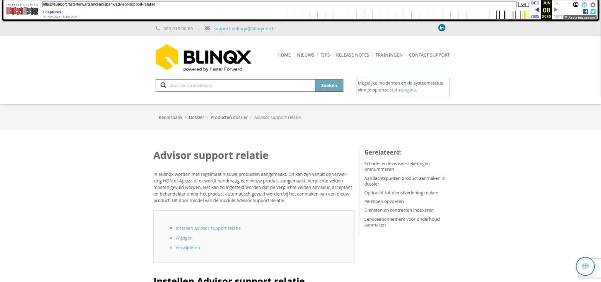

Advisor support relatie

Tekstinhoud
Advisor support relatie
In eBlinqx worden met regelmaat nieuwe producten aangemaakt. Dit kan zijn vanuit de verwerking HDN of Aplaza of er wordt handmatig een nieuw product aangemaakt. Verplichte velden moeten gevuld worden. Het kan zo ingesteld worden dat de verplichte velden adviseur, acceptant en behandelaar onder het product automatisch gevuld worden bij het aanmaken van een nieuw product. Dit door middel van de module Advisor Support Relatie.
Instellen Advisor support relatie
Wijzigen
Verwijderen
Instellen Advisor support relatie
Het instellen van de advisor support telatie kan je als volgt doen:
Ga naar Beheer – Koppelingen – Advisor support relatie
Zoek links de organisatie/kantoor op waaronder de adviseur staat en waarvoor je het wilt inrichten
Kies de adviseur, voorkeur acceptant en voorkeur dossierverantwoordelijke (= veld behandelaar)
Sla op
Als er nu handmatig een nieuwe product wordt aangemaakt door de adviseur dan dient de adviseur zichzelf te selecteren bij adviseur. De velden acceptant en behandelaar worden automatisch gevuld met datgene wat in advisor support relatie staat ingesteld.
Het automatisch vullen van de velden gebeurt ook, indien advisor support relatie staat ingesteld, wanneer er een product wordt aangemaakt vanuit HDN of Aplaza.
Let op: vanuit diverse workflows worden taken aangemaakt. In de workflow is het meestal zo ingesteld dat er gekeken wordt naar het veld Behandelaar (= in advisor support relatie dossierverantwoordelijke) om te bepalen op wie/welke workflowgroep de taak komt te staan. Wees er van bewust dat deze velden van invloed zijn op de werking van de workflows.
Wijzigen
Je kunt een bestaande advisor support relatie wijzigen door op het wijzigingsicoon achter de relatie te klikken. Links onder relatie komen dan de ingestelde velden te staan. Hier kan je de velden wijzigen en vervolgens opslaan.
Verwijderen
Binnen de advisor support relatie module is het niet mogelijk om een bestaande relatie te verwijderen. Er zijn wel andere manieren om ervoor te zorgen dat de persoon uit de advisor support relatie module verdwijnt, namelijk:
De betreffende adviseur verwijderen of uit dienst zetten onder de organisatie (in Beheer – Organisatie & personen)
De rol adviseur uitzetten. De rollen zijn terug te vinden bij Beheer – Organisatie & Personen – zoeken bij personen op de betreffende persoon – rechtst staat onder welke organisaties de persoon staat en welke rollen/functies hij hier heeft.
Laatste update: 15 oktober 2025
Was deze informatie nuttig?
Ja Nee